Miscellary
Social collecting platform
Live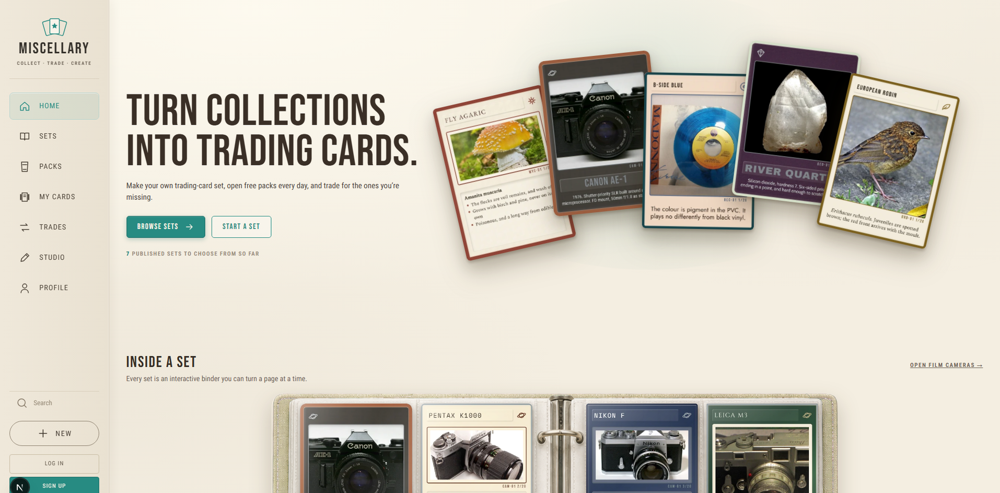
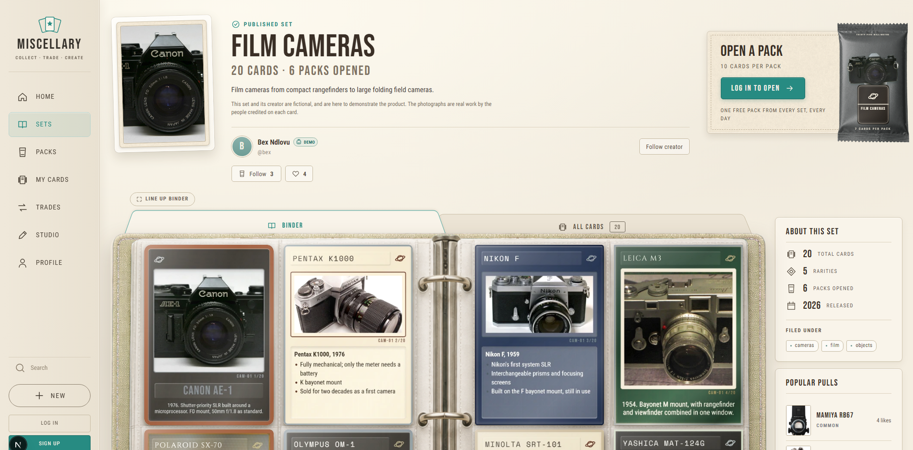
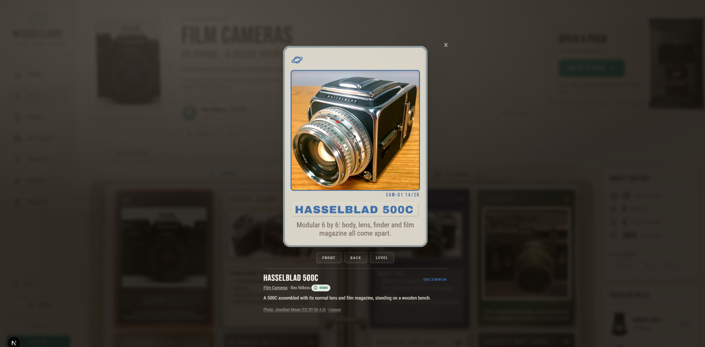
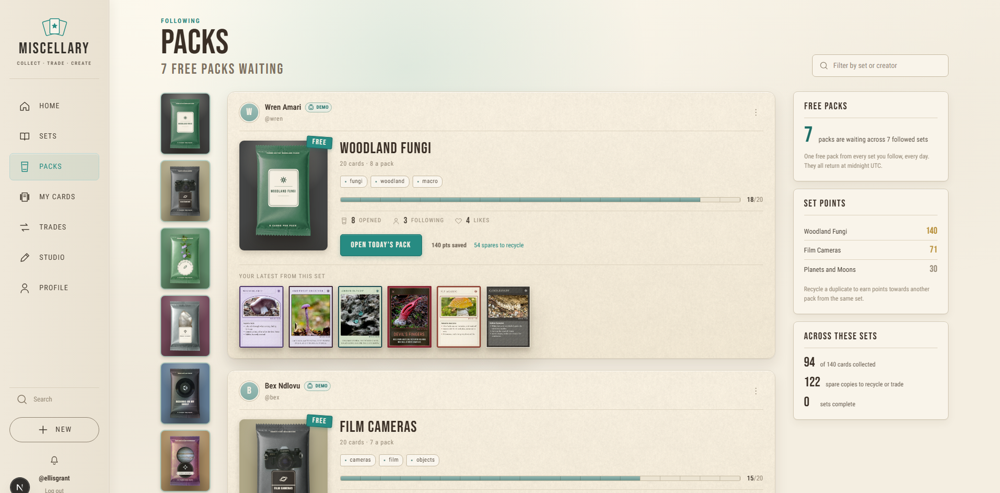
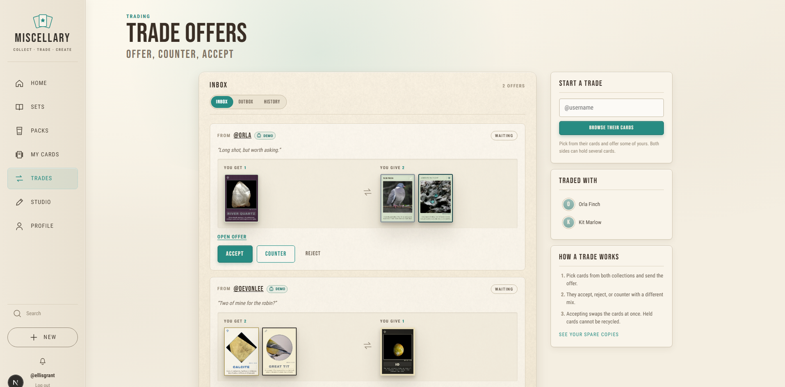
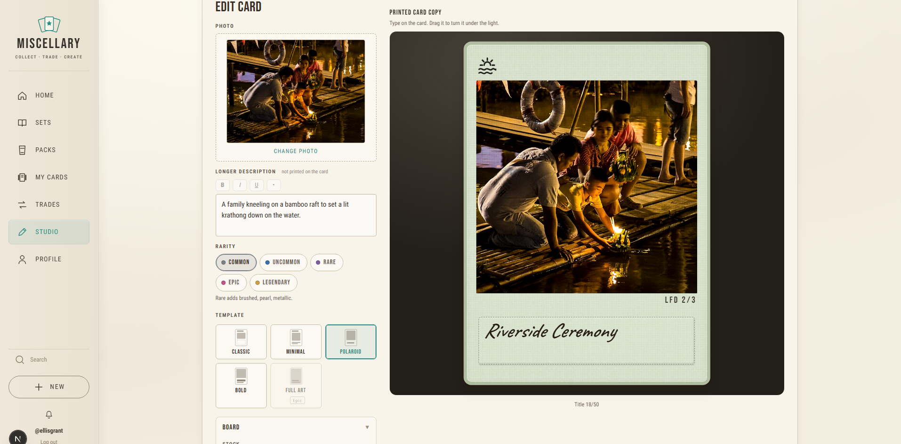
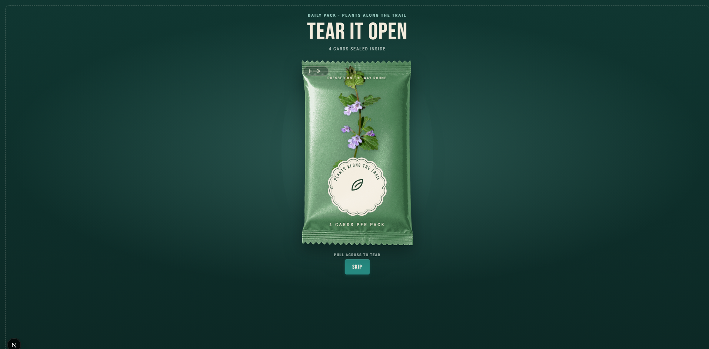
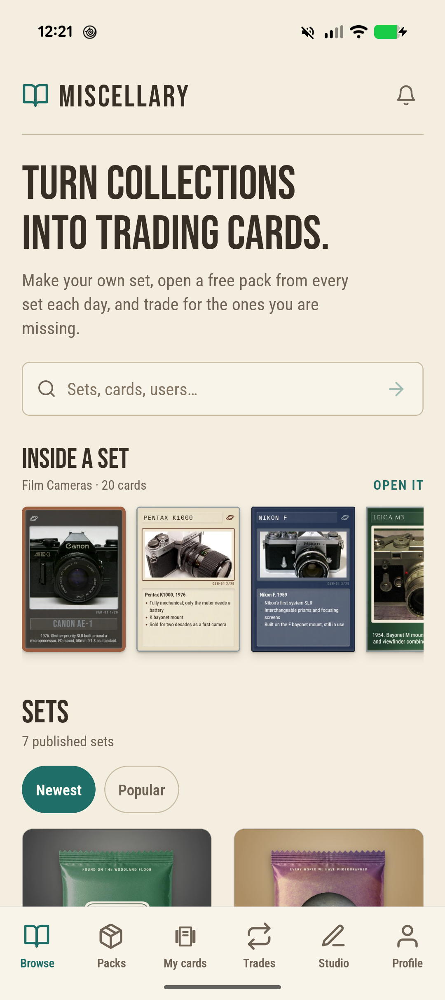
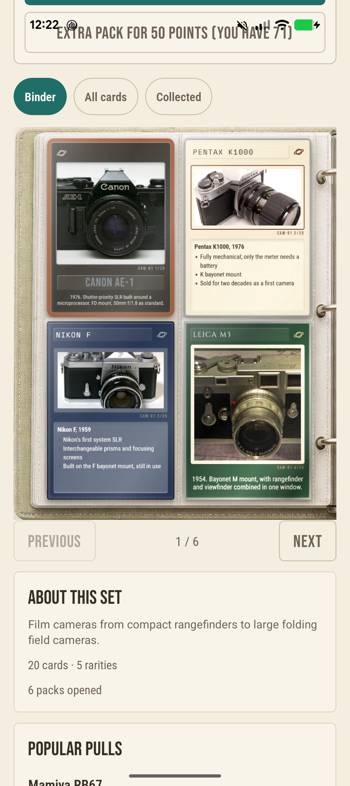
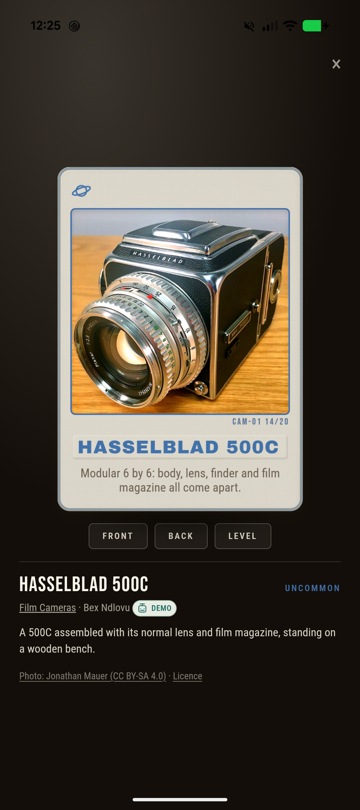
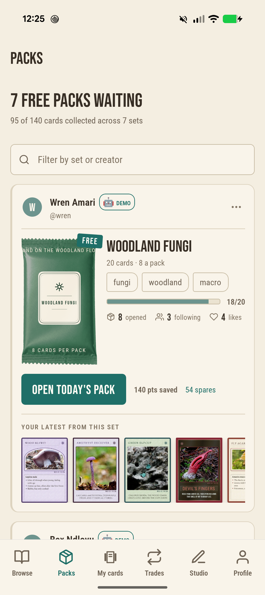
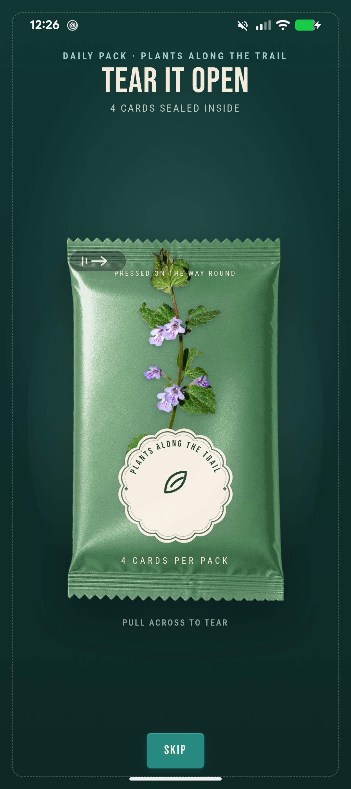
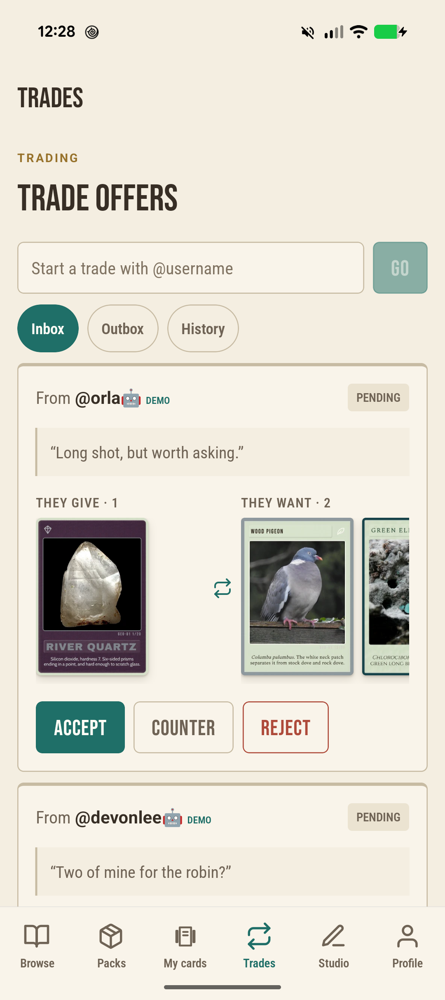
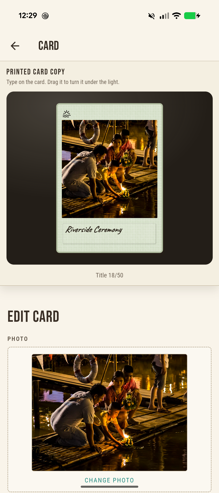
A web and Android platform built around user-created trading-card sets
Miscellary started with the idea of letting people turn almost any subject into a collectible card set. Creators design and publish sets, while other users collect them through packs and trade owned copies.
The project grew into a full web and mobile product with social features, collection management, and a shared card-rendering system. A lot of the technical work has gone into keeping ownership, trading, published card data, and visual rendering consistent across both platforms.